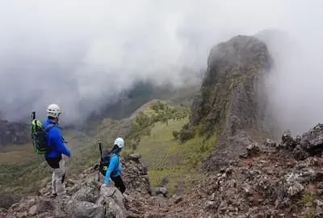
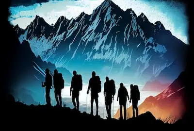

GR20 in Corsica
Europe’s Legendary High‑Altitude Adventure
The GR20 is often described as Europe’s toughest long‑distance trail, but hikers who complete it rarely talk about difficulty first—they talk about the sense of freedom, the raw beauty of Corsica’s mountains, and the feeling of crossing an entire island on foot. Stretching roughly 180 km from Calenzana in the north to Conca in the south, the GR20 is a journey through granite spires, alpine lakes, airy ridgelines, and remote shepherd country that feels untouched by time.
Wild, Varied, and Unforgettable
The GR20’s magic lies in its constant contrasts. One day you’re scrambling across jagged
rock slabs beneath the dramatic peaks of the Cirque de la
Solitude,
the next you’re wandering through pine
forests scented with wild herbs. Highlights include:
Lac de Nino — a serene
high‑altitude meadow dotted with grazing horses.
Monte Cinto region —
rugged, lunar landscapes with sweeping island views.
The Southern GR20 —
smoother trails, sun‑baked ridges, and panoramic horizons stretching to the sea.
Corsica’s mountains rise sharply from the Mediterranean, so the trail offers a rare combination: alpine drama
with glimpses of turquoise coastline.
A True Long‑Distance Challenge
The GR20 is not just a hike—it’s a commitment. Daily stages involve steep ascents,
technical sections, and exposed ridgelines. But the reward is a deep sense of achievement and a rhythm of life
that quickly becomes addictive.
Along the way, hikers stay in refuges or bergeries, simple mountain huts where you can enjoy hearty Corsican
meals—think charcuterie, cheese, and rustic stews—while sharing stories with fellow trekkers from around the
world.
Who the GR20 Is For
This route is ideal for hikers who want:
A multi‑day challenge with real physical and mental rewards
A wild, remote environment far from crowds
A chance to experience Corsican culture in its most authentic form
A trail that blends technical terrain with Mediterranean charm
It’s less suited to beginners, but perfect for confident hikers who enjoy scrambling, long days, and dramatic
mountain scenery.
Best Time to Go
The prime season runs from June to September, when the snow has melted and refuges are open. Early summer offers cooler temperatures and blooming alpine flowers, while late summer brings stable weather and long, golden evenings.
Why Choose This Hiking Package
A curated GR20 package removes the logistical headaches—refuge bookings, transfers, route
planning—so you can focus on the adventure itself. With support in place, you get:
Pre‑arranged accommodation in mountain refuges
Luggage transfer options on selected sections
Detailed route notes and safety guidance
Local insights into Corsican nature, food, and culture
It’s the most seamless way to experience one of Europe’s great trekking achievements.